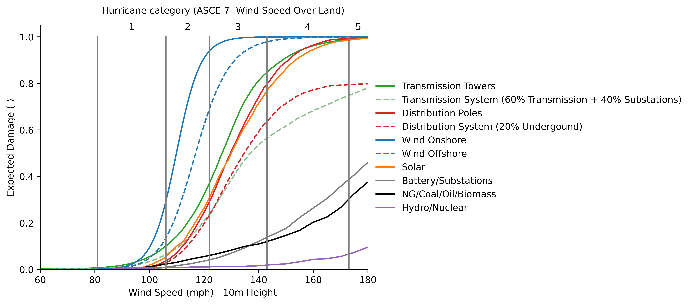
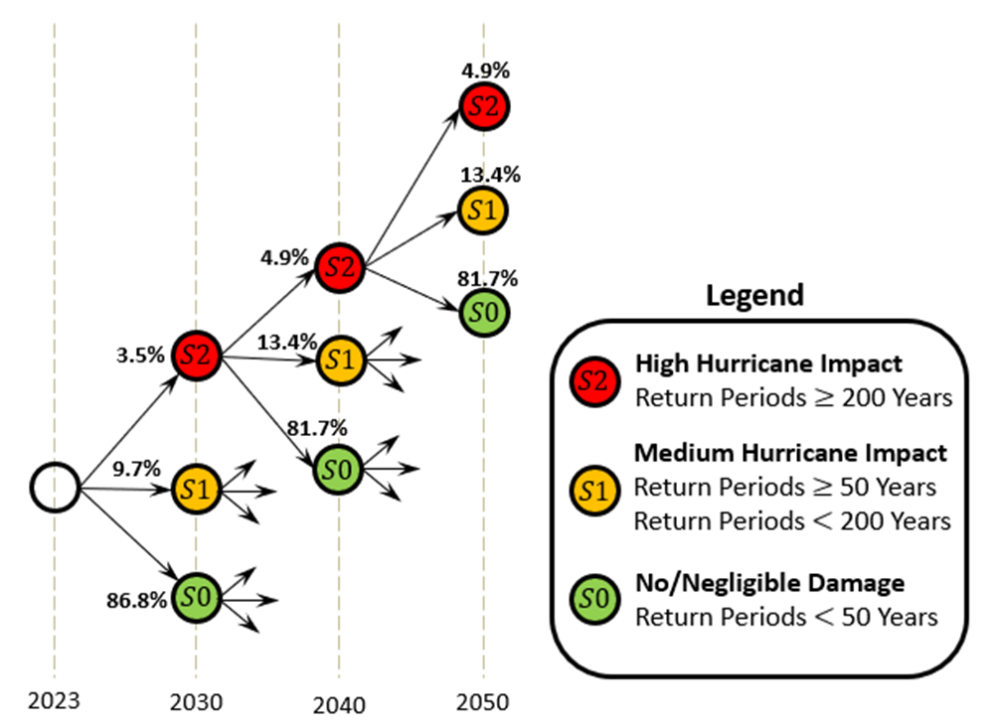
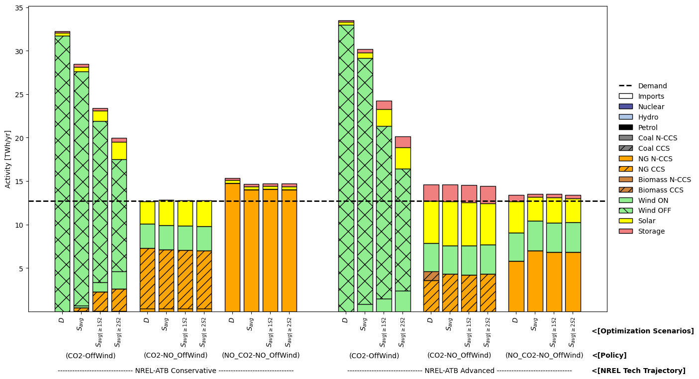

Energy planning under hurricane risk
Electricity infrastructure is built for decades of service, while hurricanes can damage the resources a system depends on. That exposure matters when choosing technologies, locating new capacity, and deciding when to invest. I developed a multistage stochastic extension of TEMOA to study these decisions for North Carolina from 2023 to 2050.
The work connects three parts of the problem: where hurricane winds occur, how different technologies respond, and how the energy system can adapt. Engineering evidence becomes an input to the same optimization that selects generation, storage, and network investments under changing technology costs, fuel prices, and policy requirements.
Building an electricity system through 2050
Capacity expansion determines what to build, how much, where, and when. The model starts with existing infrastructure and its retirement schedule, then compares new generation, storage, transmission, and distribution investments. Technology costs, construction times, fuel use, renewable availability, electricity demand, reserve requirements, and emissions constraints all affect the plan. Operating decisions connect these investments to the electricity supplied during representative hours of each season.
The North Carolina model has three planning regions, from the most exposed coastal area to less-exposed inland areas. Its technology options include solar, onshore and offshore wind, batteries, nuclear, hydropower, biomass, and fossil generation with or without carbon capture. Hurricane damage changes how much capacity survives into a later planning stage, so the model may rebuild, substitute another technology, or invest in a different region.
Turning hurricane winds into technology damage
FEMA HAZUS provides hurricane wind estimates for different return periods across the state. A central part of the project was assembling the fragility and loss relationships needed to translate those winds into damage. Appendix D.2 compares estimates from multiple engineering studies for each technology, including different turbine designs, tower and pole types, building structures, and failure mechanisms.
Those estimates are not directly interchangeable. Wind speeds measured at different heights or averaged over different durations describe different loads. We brought them to a common basis: 3-second gusts at 10 metres above ground. We also distinguished a fragility curve, which gives the probability of reaching a failure or damage state, from a loss curve, which gives the expected fraction of value lost. Where failure of a critical component represents loss of the whole device, its failure probability can serve as a loss proxy; other technologies require different approximations.


Different technologies translate the same wind exposure into different damage. Figure 5.4 from Chapter 5, dissertation page 95. The horizontal axis is wind speed; the vertical axis is the expected damage fraction used in the model. The curves combine literature-based fragility estimates and loss functions. Their differences reflect the selected designs and assumptions, rather than universal rankings of technology vulnerability.
The resulting damage fractions reduce the capacity carried into the next investment stage. For example, a 20% damage factor leaves 80 MW of a previously built 100 MW asset available in the model. Costs already committed to that asset remain, even when part of its capacity is lost. For existing plants, damage reflects their locations and is aggregated using capacity weights. For new infrastructure, county-level damage estimates are averaged within the selected planning region.
How the damage curves were assembled from the literature
The comparison and selection process is documented in Appendix D.2, pages 197–204, of the full dissertation.
Technology or system |
Evidence and modeling choices |
|---|---|
Onshore and offshore wind |
Compared turbine-collapse and component-loss studies, including Jaimes et al. (2020), Bouchard and Romanic (2023), Rose et al. (2013), and Cheng et al. (2023). The appendix selects the Bouchard–Romanic loss relationship for onshore wind and Wilkie and Galasso (2020) for offshore wind. |
Solar PV |
Selected the curve in Kabre and Weimar’s PNNL report (2022) after comparison with rooftop configurations from Goodman (2015). The model applies a common approximation to residential, commercial, and utility PV. |
Batteries, substations, and power plants |
Used FEMA HAZUS building-loss functions as proxies: low-rise steel structures for batteries and substations; mid-rise steel structures for gas, coal, oil, and biomass; and mid-rise concrete structures for hydro and nuclear. |
Transmission |
Averaged tower estimates from several studies, including Du and Hajjar (2022), Mohammadi Darestani et al. (2019), and Schumann and Chini (2023). The system curve combines 60% tower loss and 40% substation loss, using assumed capital-cost shares. |
Distribution |
Selected Salman and Li’s (2015) new wooden-pole curve after comparison with other pole designs and ages. The system curve uses 80% of pole damage, assuming the remaining 20% is underground and unaffected by wind. |
FEMA guidance and Harper, Kepert, and Ginger (2010) support the wind-speed conversions. Separate conductor and insulator failures are not represented in either network curve. The review also exposes an important source of uncertainty: published curves for the same technology can differ substantially. These selected relationships are engineering assumptions for the planning analysis, with that variability identified as further research.
Making decisions across 27 hurricane paths
The initial investment decision is made in 2023. Outcomes at 2030, 2040, and 2050 represent hurricane exposure over the intervening seven-, ten-, and ten-year intervals. Each interval has three possible outcomes: S0, negligible modeled damage; S1, medium damage associated with 50- to less-than-200-year hazards; and S2, high damage associated with hazards having return periods of at least 200 years. Three branches at each of three stages produce 27 possible paths.
Early investments must be shared by scenarios that have the same history: the model cannot choose them with advance knowledge of which hurricane outcome will occur. Once an outcome is known, later investment and operating decisions can differ. The objective minimizes probability-weighted investment and operating costs, discounted to the present, while meeting the modeled electricity-system requirements along each path.


Invest now; adapt as hurricane outcomes unfold. Figure 5.7 from Chapter 5, dissertation page 97. The labels give probabilities over each planning interval. A branch summarizes that interval’s hazard exposure, including expected damage from repeated events; it does not specify a single storm’s date or track.
Scenario probabilities, technology trajectories, and policy cases
A return period describes annual rarity, rather than a regular schedule or a hurricane category. Appendix D.14 converts annual probabilities into the chance of each outcome over a planning interval. For a return period of \(T\) years and an interval of \(n\) years, the chance of at least one exceedance is \(1-(1-1/T)^n\), under the study’s independent annual occurrence assumption.
Outcome |
2023–2030 |
Each later ten-year interval |
|---|---|---|
S0: negligible modeled damage |
86.81% |
81.71% |
S1: medium damage |
9.74% |
13.40% |
S2: high damage |
3.45% |
4.89% |
The broader chapter first compares 27 deterministic input combinations: three NREL technology-development trajectories, three EIA fuel-price trajectories, and three policy cases. These input combinations are separate from the 27 hurricane paths. The policy cases impose emissions and offshore-wind targets together, emissions targets alone, or neither.
The reported hurricane comparisons use conservative and advanced technology development, the three policy cases, and reference fuel prices. This makes it possible to compare plans with and without hurricane risk while keeping their technology, fuel, and policy assumptions aligned. The scenarios reflect the study’s original 2024 context.
How hurricane exposure changes the generation plan
The clearest changes occur when offshore wind is required. As severe outcomes reduce its available capacity and output, the model compensates through other technologies and greater generation in less-exposed regions. This is a spatial planning response as well as a change in the technology mix.


Hurricane exposure changes where electricity is produced. Dissertation Figure 5.12, page 106. The bars show annual technology activity in the most exposed coastal region in 2050, measured in TWh per year. Within each policy and technology case, D is the plan without hurricane risk; S_avg is the expected stochastic outcome; the next bars average paths with at least one or two high-damage intervals. The dashed line marks regional demand. All cases use reference fuel prices. Full dissertation.
Hurricane exposure matters differently across portfolios. Cases without offshore-wind requirements show smaller changes. With those requirements, reduced offshore generation is offset by other resources and locations, including natural gas with carbon capture and some additional solar and onshore wind.
Expected costs and severe outcomes tell different parts of the story. In the conservative-technology case with emissions and offshore-wind targets, expected total system cost increases by about 0.8% relative to the plan without hurricane risk. The conditional increase reaches 3.8% for paths with at least two high-damage intervals. These are discounted system-planning costs over 2023–2050.
Technology progress changes the tradeoffs. With advanced technology development and emissions targets alone, the deterministic analysis finds a 1–1.8% cost premium over cases with neither policy requirement. Adding the offshore-wind requirement changes that comparison. Storage and renewable generation become more important toward 2050, and natural gas with carbon capture contributes in many net-zero scenarios.
My contribution was to build the Python extension and the data pipeline that bring these pieces together: engineering damage estimates, geographic exposure, uncertain hurricane sequences, and decisions about future infrastructure. The result is a framework for testing how vulnerability changes an investment plan and which alternatives can compensate when exposed capacity is lost.
The scope is long-term planning. Damaged capacity is treated as lost and replaced or rebuilt at coarse decision stages; detailed repair schedules and customer outages are outside the model. The relatively small expected cost effect also reflects the concentration of demand and generation inland, the selected damage curves, and the discounting of future costs. Curve uncertainty, finer storm timing, and policy incentives remain important extensions.
Dissertation chapter, presentations, and code
Chapter 5: Capacity Expansion Planning on the North Carolina Energy System: Analyzing Policies, Cost Trajectories, and Hurricane Risks. From Predictive and Prescriptive Analytics Applied to Energy Systems (2024).
Read the Chapter 5 excerpt (PDF, 6 pages) — selected dissertation pages 84, 85, 95, 97, 107, and 108, including the overview, hazard and scenario figures, cost comparison, and conclusions.
Full dissertation at NC State — Chapter 5 presents the model and results; Appendices D.2 and D.14 document the damage-curve review and hurricane probabilities.
Ph.D. defense presentation, 2024 · INFORMS presentation, 2023 · Research symposium poster, 2024
Related project: mooring-system fragility examines how hurricane conditions affect the probability of exceeding mooring operating limits.